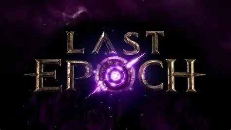

最后纪元
S4 破碎预兆赛季进行中 · V1.4.2 · 攻略持续更新
S4 破碎预兆
第四赛季 · V1.4.2游侠·圆舞斩收刀BD
装备制作全流程详解——从底材选择到腐化词缀，从技能搭配到被动树规划
阅读攻略虚空骑士·投盾BD
盾牌投掷伤害构建——从底材锻造到词缀洗练，装备选型与传奇合成全流程
阅读攻略赛季机制详解
击碎预兆之窗、物品腐化系统、观察者之视挑战、四大变体（火/冰/闪电/虚空）
阅读攻略版本更新日志
V1.4.2 版本变更、职业平衡调整、新增内容与修复
阅读攻略核心机制
基础必学时空旅行机制
时间线系统详解、时空裂隙探索、不同时间线奖励差异
阅读攻略词缀与锻造系统
装备词缀分级、锻造与拆解、传奇装备制作流程
阅读攻略职业攻略
5职业 · 15专精圆舞斩收刀BD
装备制作全流程、技能搭配、被动树规划、腐化词缀选择
阅读攻略虚空骑士·投盾BD
时间腐朽持续伤体系、多套装混搭、装备锻造与传奇合成全解析
阅读攻略法师构建指南
元素/混沌双资源体系、火法/冰法/雷法/虚空全流派
阅读攻略猎人构建指南
物理/元素/宠物三系专精、远程/近战多路线
阅读攻略死灵构建指南
召唤/亡灵/诅咒三系路线、尸爆流与骨盾坦
阅读攻略终局内容
高层挑战迷宫副本攻略
迷宫地图机制、Boss战策略、掉落表全收录
阅读攻略命运副本 & 终局玩法
时间线终局玩法、角色毕业路线指引
阅读攻略经济与交易
市场系统使用、物品估价、商人配方、高效赚钱方法
阅读攻略